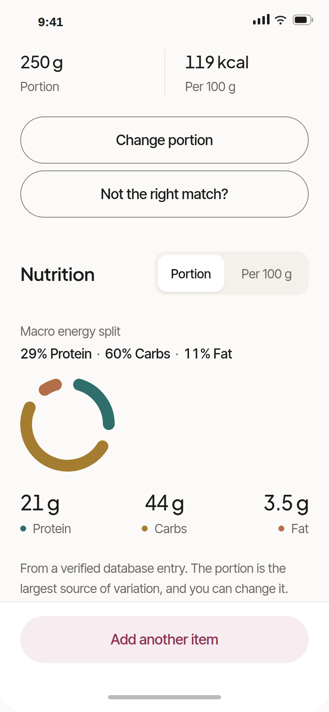
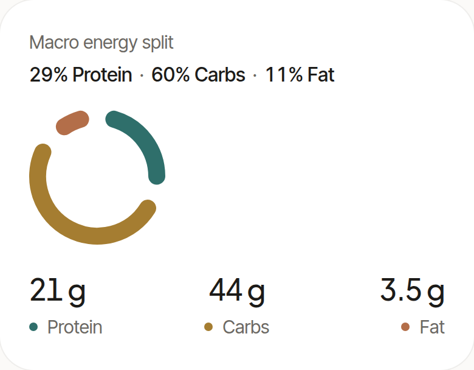
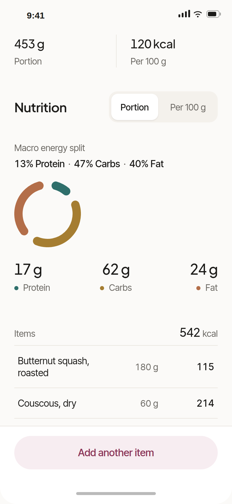
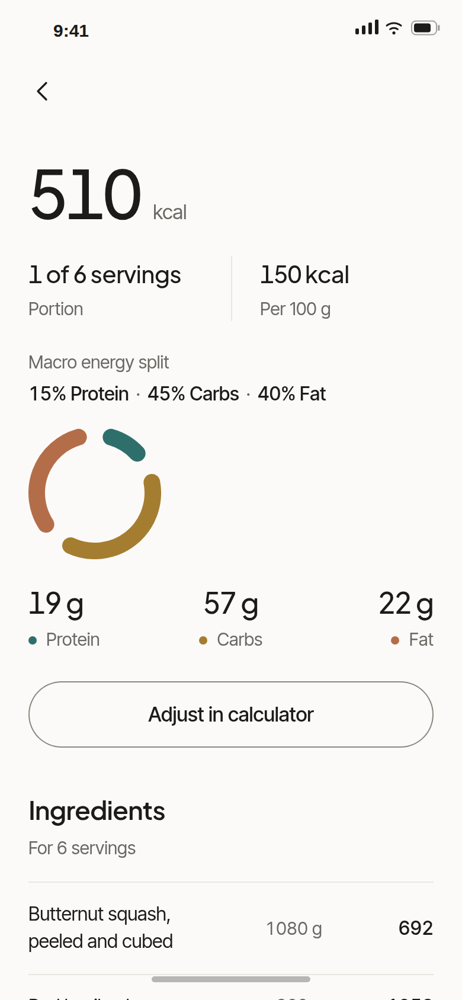

Product design case
piatt
Calorie calculator & recipe discovery
A calm, portion-first nutrition product


02 Problem & scope
Two focused user needs
Calculate calories and nutrition for a food, product or dish.
Find a suitable recipe based on dietary preferences and constraints.

03 Brand
piatt
Calorie calculator
Precision without
intimidation.
Why this direction
I first explored a dark, technical direction and dropped it. Nutrition estimates are approximate, so the product should communicate clarity without implying false precision.
Plus Jakarta SansInter Tight


298kcal
Puy lentils, ready to eat


04 Design System
From visual language to reusable UI

MacroEnergySplit — the brand arc, working as data. Hidden entirely when the data is incomplete.
- Tokens, not values, and 44 px minimum touch targets throughout.
- Loading, empty and error states belong to the component, and unknown data is never drawn as zero.


05 Flow 1
Calculate nutrition


06 Flow 2
Find a suitable recipe



07 Beyond the happy path
The product also handles uncertainty


Missing data is explicit.Unknown never becomes zero.Recovery actions stay available.
01 / 08
→ or space to advance · F for full screen